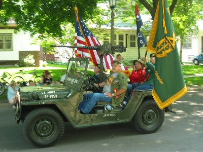

Service Club Links
Home
Officers
Meetings
Membership
Parade Links
2012 Parade
2012 Parade Sponsors
2012 Sponsorship Levels
2012 Entrance Form (pdf)
2012 Honorees
Past Honorees
Died in Battle
Pics, Honorees & Sponsors of Past Parades

| WANTED !! WANTED !! |
|
Information on any River Forest residents who: • are on active military duty for our country, or • are a veteran of our country’s armed forces. |
| Contact a member of the Service Club to have them honored by our community in future Memorial Day ceremonies. |
| WANTED !! WANTED !! |
|
Information on any River Forest residents who: • are on active military duty for our country, or • are a veteran of our country’s armed forces. |
| Contact a member of the Service Club to have them honored by our community in future Memorial Day ceremonies. |
©2012 River Forest Service Club |
Contact Us |
Last Update: 27 May 2012 |